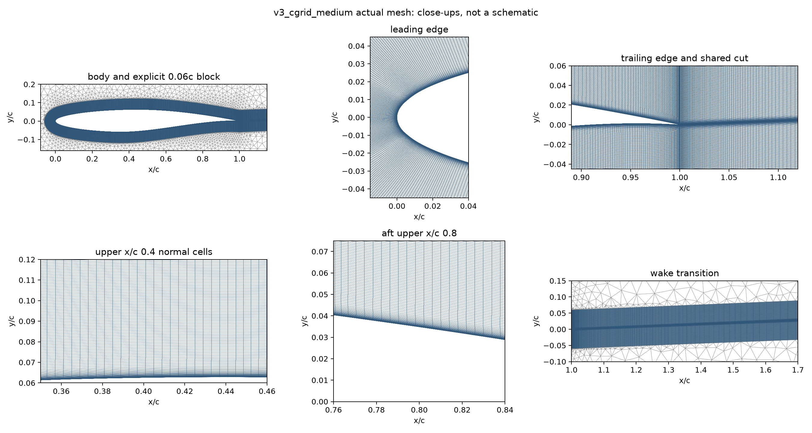
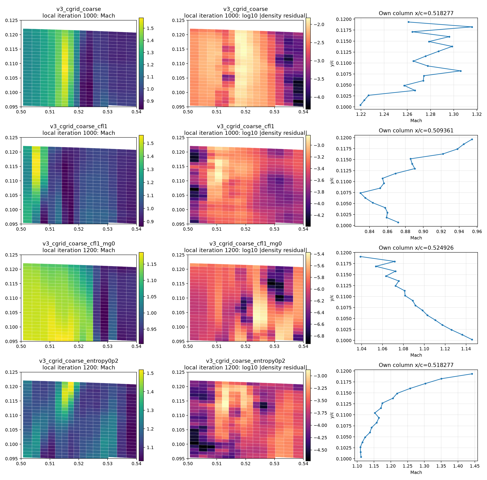
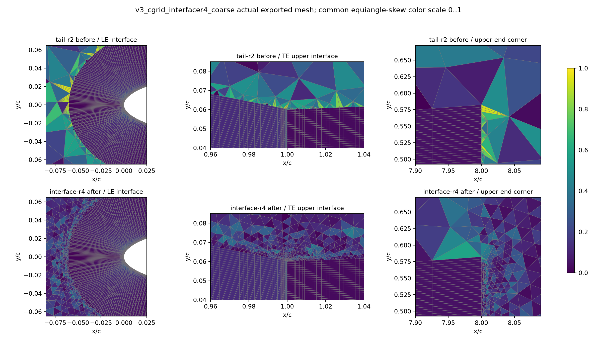
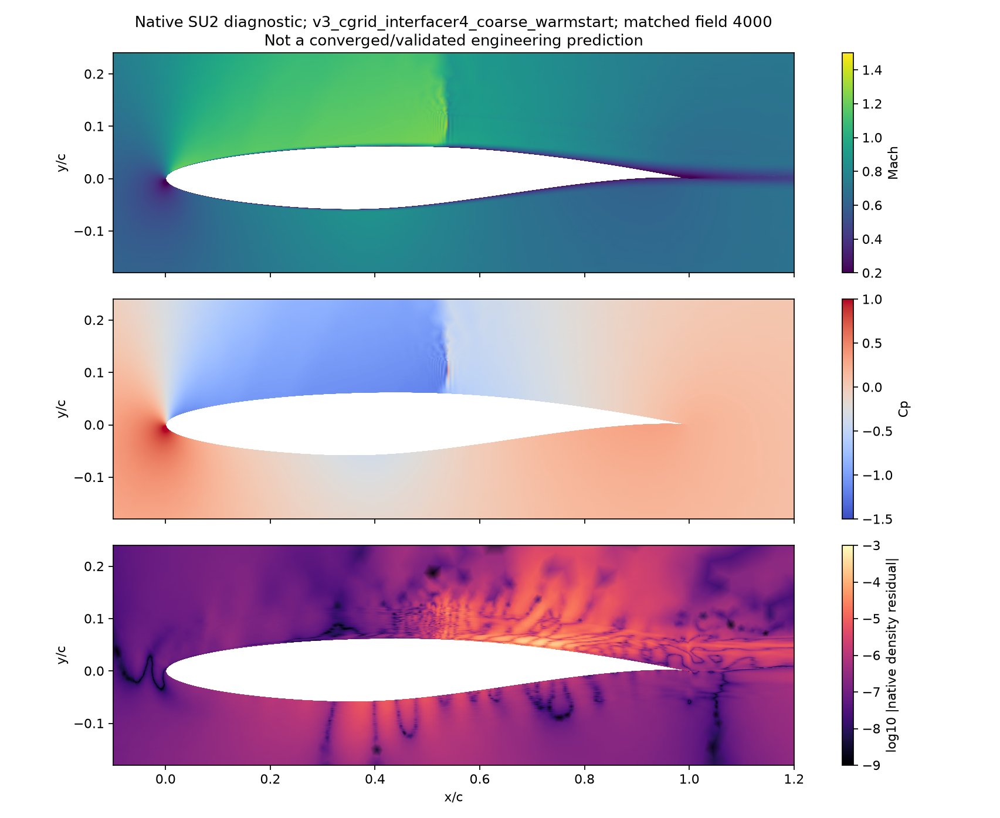

RAE2822: kaynak araştırmasıyla CFD teşhisi
Kaynak geometriden kör CFD sınaması projesi · 19–24 Ekim 2026
Asgari fiziksel yeterlilik henüz geçmedi
Ne değişti?
Deneme sayısını artırmadan önce Gmsh kılavuzu, NASA ağ/koşul arşivi, Diskin–Thomas gradyan çalışması, SU2'nin RAE2822 doğrulama makalesi ve gerçek v8.5.0 kaynak kodu incelendi. Kaynak noktaları yeniden tasarlanmadı. Sabit 0,01c katmanın yerine 0,06c açık normal blok ve ortak iç iz kesiti olan üç C-grid üretildi.
Yayımlanmış NASA 369×65 ağı da koordinatları değiştirilmeden gerçek native SU2 RANS/SA ile çözüldü. Bu kontrolün geometri temsili ve yaklaşık20–27c dış sınırı, yeni C-grid'in r2 eğrisi ve200c sınırından farklıdır. Farkı yalnız ağ tipine atfetmek doğru olmaz.
Ayrı analiz geçmişi hedef deney sonuçları verilmeden geometri ve sayısal alanları denetledi. Ana ajan önceki deney değerlendirmesini biliyor. Bu devam çalışması yeni bağımsız kör doğrulama veya güvenli dosya yalıtımı değildir.
Gerçek çözümler ve değişmeyen eşikler
Her satırdaki alan, aynı numaralı yüzey/hacim/restart üçlüsüne ve geçmiş satırına dayanır. Son200 CL aralığı≤5e−5, CD aralığı≤2e−6; yoğunluk kalıntısı≤−8 ve max y+<1. Deney Cp RMSE sınırı0,03; diğer noktasal ve şok kapıları da ayrıca korunur. Başarısız veya yakınsamamış alan mühendislik tahmini olarak kullanılamaz.
Cp hücresi henüz yok ise son tahmin mühürlenip puanlanmamıştır. Genel kabul, bu tablodaki tek bir ekran değildir: aynı ailede üç yakınsamış ağ, bölgesel normal çözünürlük, uzak alan, deney ve kapsam birlikte gerekir. Orta/ince yeni CFD ve400c duyarlılığı tamamlanmadan minimum=false kalır.
Konuma göre üretilen ağ
Kaynak r2 B-spline üzerindeki duvar düğümlerinin eğriye uzaklığı sayısal olarak sıfır; CFD'nin düz kenarlı çokgen temsil hatası bununla sıfırlanmaz. İlk hücre normalliği, LE/TE, aft sütunlar, iz ve dış geçiş ayrı ölçüldü. TE'deki düşey kılavuz dönüşü nedeniyle ilk normalden sapma ençok yaklaşık27°; bu kayıtlı haritalama tercihi ayrıca açık bir sınırdır.

Orta ağ ölçümleri · İnce ağ ölçümleri
Nedenler nasıl ayrıldı?
Aynı coarse1000 başlangıcından yalnız CFL politikası, multigrid, entropy sönümü, örtük Jacobian katsayısı ve scalar/matrix JST ayrı dallarda sınandı. Ana fiziksel koşullar, kaynak geometri ve kabul eşikleri değiştirilmedi. Örtük katsayı4→8 aynı ayrık artık denkleminin iterasyon testidir; entropy ve scalar JST ayrık sönümü değiştirir. Scalar/matrix farkını tek bir eigenvalue katsayısına indirgeyemeyiz.
Bağımsız denetim negatif dual hacim, ters yüz normali veya kopuk bağlantı bulmadı. İlk şok kutusundaki hücre açıları87,51–92,49° ve oranları1,79–3,11; orada “çok ince/kötü hücre” açıklaması desteklenmedi. Kendi alanında normal sütun boyunca Mach zikzakları ölçüldü. Sonraki dallarda en büyük kalıntının konumu değişti; tek eski sıcak kutu bütün vakaların nedeni sayılamaz.

Ayrı analizcinin kaynaklı teşhisi · Koordinatlar, ölçüler ve alan hashleri
Jacobian8 tanısında gerçek doğrusal çözücü kayıtları da alındı. İstenen0,05 doğrusal hata toleransına1–2 adımda ulaşılması,15 adım sınırına takılma açıklamasını bu kayıt için desteklemiyor. Daha sıkı doğrusal toleransın ayrı duyarlılık testi yerine geçmez.
Kaynak araştırmasının olumsuz sonucu da korundu
SU2 doğrulama makalesi RAE2822 için ikinci mertebe türbülans taşınımı kullanıyor; örnek configimiz birinci mertebeydi. Aynı yayımlanmış ağda yalnız bu politika değiştirilerek gerçekten çalıştırıldı. Sonuç deney hatasını iyileştirmedi; daha yüksek mertebe adını otomatik başarı saymadık.
Yayımlanmış WIND sayısal eğrisi de aynı103 özgün deney noktasına karşı ayrı hesaplandı. Yaklaşık0,05161 RMSE verdi; bu sayısal referans da0,03 hedefimizi karşılamıyor. Bu, eşiği gevşetmez ve bizim kodumuzu doğrulamaz. Yalnız ağ/iterasyon düzeltmesiyle deney farkının mutlaka kapanacağı varsayımına dikkat çeker. Model, fiziksel trip ve tünel düzeltmesi belirsizlikleri ayrı işlerdir; alfa/Mach sonuç tutturmak için oynatılmadı.
WIND dosyasının yanıltıcı “Experiment” başlığı veri türü sayılmadı. NASA'nın grid sırası ve CFPOST I33..337 seçimiyle alt→üst yüzey düzeni doğrulandı. İlk yanlış yüzey sıralamalı tanı korunup yalnız bu tanı sürümünde düzeltildi; native alanlar ve v1/v2 değerlendirmeleri değişmedi.
Yayımlanmış eğri kıyası · Tüm103 nokta
Gerçek bulunan ağ üretici hatası
İz son noktasını8c'ye doğrudan taşıma, son hücreyi ilan edilen adım tavanının1,384/1,318/1,207 katına çıkarıyordu. Ayrı tail-r2 sürümü kalan uzunluğu kuyruğa eşit dağıtarak düzeltir. Özgün ağlar değiştirilmedi; karşı dallar aynı orijinal ağı kullanır. Bu uzak noktadaki hatanın şok kararsızlığını çözdüğü iddia edilmez.
Konuma bağlı dış üçgen iyileştirme sürümleri varsa ayrı raporlanır; aynı duvar/normal blok korunarak yeni dış ağ üretilmesi yeni ağ sürümüdür. Geçen geometri denetimi CFD başarısı değildir.
Uygulanmış tail-r2 gerçek ağ denetimi · İlk bağımsız dağıtım önerisi
LE/TE ve dış ağ geçişinin gerçek düzeltmesi: R3 → R4
R3 yalnız iz sonundaki boyut geçişini iyileştirdi; hücum/firar kenarındaki dış üçgen sorunlarını çözmedi. R4 bütün yakın-blok arayüzünün gerçek kenar boyutunu dış ağı boyutlandırmaya katıyor. Etki0,25c içinde tam,0,25–1c arası yumuşak azalan,1c dışında eski boyut kuralıyla aynıdır. Bütün dış üçgenler yeniden üretildiği için bağlantı değişimi bu mesafenin dışına yayılabilir. Duvar, yakın normal blok, kaynak r2 eğrisi ve200c dış sınır korunuyor.
Tablo bir geometri iyileşmesidir; sonradan geçme eşiği üretilmedi. İnce ağın dış iz bölgesindeki4,95° açısı ve arayüzde kalan normal boyut sıçramaları açık. Bu nedenle bütün aileyi “iyi ağ” veya doğrulanmış CFD diye sunmuyoruz. Aynı noktada pozitif Jacobian/topoloji geçmesi farklı bir kontroldür.

Üç seviyenin ayrıntılı ağ raporu · Bölgesel normal geçişler · Ağ/kod/girdi mühürleri
Çözücü yöntemi için ayrı kaynaklı denetim
Yayımlanmış SU2 RAE2822 çalışmasının sayfa23/33 bölümü JST ve Roe akılarını karşılaştırır; upwind için primitive değişkenlerde Venkatakrishnan sınırlayıcı kullanır. R4'ün ilk merkezi-akı çözümü tekrar yakınsamadığı için aynı mesh ve aynı başlangıç alanında ayrı Roe/MUSCL/sınırlayıcı politikası denetimi kaydedildi. Türbülans taşınımı, fizik, CFL, MG ve doğrusal çözüm bu karşılaştırmada sabittir. Bu politika birden fazla etkin ayarı değiştirir; tek katsayının nedensel testi veya makalenin bire bir yeniden üretimi sayılmaz.
R4/JST ve R4/Roe ailelerinin ince değerlendirme rolleri çözümlerinden önce ayrı sabitlendi. Daha iyi deney uyumu veren coarse deneme fine yerine geçirilemez. Kaynak makalede daha sıkı doğrusal tolerans her zaman daha hızlı değildi; bizim gerçek LinSolRes kayıtlarımız da “15 adıma takılı kalıyor” varsayımını desteklemiyor.
Sonuçtan önce kaydedilen yöntem gerekçesi · R4/JST ön seçim · R4/Roe ön seçim
Fiziksel koşulların ve kıyasın sınırları
Bu vaka NASA'nın önceden seçilmiş düzeltilmiş M0,729/alfa2,31°/Re6,5M koşuludur; nominal deney M0,725/alfa2,92° ile karıştırılmaz. Tam türbülanslı SA-noft2, deneyin x/c0,03 trip telini modellemiyor. Kaynak hesap sıcaklığı255,5556K bir varsayımdır.1m normalize veter için basınç Reynolds benzerliğiyle belirlenir; NASA'nın1ft veterindeki boyutlu basıncı aynen kopyalamıyoruz.
Kaynak NASA ağ kontrolünde bütün dış kenarlar SU2 FARFIELD'dir; WIND arşivinin ayrı çıkış basıncı sınırı bire bir üretilmedi. Bu nedenle kaynak kod/mesh kontrolünü deneyin veya WIND'in tam yeniden üretimi olarak yorumlamıyoruz. Kabul eşiği0,03 olarak korunur; fizik/model ve deney belirsizliği sayısal yakınsamadan ayrı değerlendirilir.
Yeni dondurulmuş kıyaslar: Kıyas 01 · Kıyas 02 · Kıyas 03 · Kıyas 04 · Kıyas 05 · Kıyas 06
Rekonstrüksiyon kontrolü ve gerçek alan
İkinci mertebe Roe aynı mesh/seed üzerinde kabulü geçmedi. Yalnız MUSCL_FLOW kapatılarak ayrı birinci-mertebe tanı ve kesilen oturumun4200 alanından kontrollü devamı yapıldı. Bu daha fazla sayısal yayınım içeren yöntemdir; daha iyi yakınsama yüksek doğruluk, ikinci mertebe çözüm veya deney kabulü sayılmaz. Bu tanı deney puanına göre aday seçmek için kullanılmadı.
Yerel VTU residual alanı LinSysRes çalışma vektörüdür; history'deki önceden seçilmiş rms[Rho] kabulüyle eşit olduğu varsayılmadı. Görsel konumsal tanıdır, yakınsama hesabının yerine geçmez.

Native Gmsh alanı · SDK ve ayrı Gmsh programıyla geri okuma · Etkin yöntem değişimleri · Ayrı konumsal alan denetimi
Kanıtlar ve kapsam
Bu sabit RAE2822 benchmark çalışması keyfi CAD'den genel ağ/CFD hizmeti değildir.3D M6, gerçek İHA, stall, kararlılık ve yapı kabulleri kapanmadı. Gerçek İHA girdileri değiştirilmedi. Ağ değişimi, yöntem doğrulaması, farklı çözücü kıyası ve deney doğrulaması ayrı tutulur. Güvenilir monoton/asimptotik rejim kanıtı yokken GCI/Richardson hata bandı verilmez.